Préstamo de juegos
Guía rápida de la ludoteca
El sistema de préstamo online solo se puede usar cuando estás en el armario.
En tres pasos
|
1
Entra en la ludoteca
Escanea el QR o visita la web. Inicia sesión con tu correo y contraseña. |
2
Busca el juego
Comprueba que esté disponible. |
3
Registra el préstamo
Pulsa Prestar, confirma y llévate el juego. Al devolverlo, regístralo también en la web. |
Recuerda
|
Solo para socios y socias activos
El catálogo se puede consultar sin cuenta; para pedir prestado necesitas iniciar sesión. |
Sin fecha límite, con responsabilidad
Devuelve el juego cuando termines de usarlo o ya no lo necesites, para que otras personas puedan disfrutarlo. |
|
¿Es la primera vez?
En el inicio de sesión, pulsa ¿Olvidaste tu contraseña? y usa el correo de socio o socia. |
Antes de salir
Verifica que el préstamo aparece en Mis préstamos. Así el inventario queda actualizado. |
|
Abrir la ludoteca
refugiodelsatiro.es/ludoteca/
|
¿Olvidaste tu contraseña?
Recibe un enlace de acceso en tu correo. refugiodelsatiro.es/ludoteca/forgot-password
|
¿Tienes un problema?
Envianos un correo explicando que pasa refugiodelsatiro+prestamos@gmail.com
|